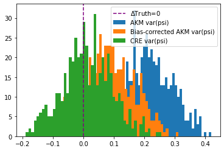

Monte Carlo example¶
[1]:
# Add PyTwoWay to system path, do not run this
# import sys
# sys.path.append('../../..')
[2]:
# Import the PyTwoWay package
# (Make sure you have installed it using pip install pytwoway)
import pytwoway as tw
First, optionally set parameter values for the simulated data¶
[3]:
## Optional Parameters ##
sim_params = {
'num_ind': 10000, # Number of workers
'num_time': 5, # Time length of panel
'firm_size': 50, # Max number of individuals per firm
'nk': 10, # Number of firm types
'nl': 5, # Number of worker types
'alpha_sig': 1, # Standard error of individual fixed effect (volatility of worker effects)
'psi_sig': 1, # Standard error of firm fixed effect (volatility of firm effects)
'w_sig': 5, # Standard error of residual in AKM wage equation (volatility of wage shocks)
'csort': 1, # Sorting effect
'cnetw': 1, # Network effect
'csig': 1, # Standard error of sorting/network effects
'p_move': 0.5 # Probability a worker moves firms in any period
}
Second, create a simulated Monte Carlo object using the parameter choices¶
[4]:
# Create the TwoWayMonteCarlo object
twmc_net = tw.TwoWayMonteCarlo(sim_params)
Third, optionally set parameter values for the Monte Carlo simulation¶
[5]:
## Optional Parameters ##
# For FE estimation
fe_params = {
'ncore': 1, # Number of cores to use
'batch': 1, # Batch size to send in parallel
'ndraw_pii': 50, # Number of draw to use in approximation for leverages
'levfile': '', # File to load precomputed leverages
'ndraw_tr': 5, # Number of draws to use in approximation for traces
'h2': False, # If True, compute h2 correction
'out': 'res_fe.json', # Outputfile where FE results are saved
'statsonly': False, # If True, return only basic statistics
'Q': 'cov(alpha, psi)' # Which Q matrix to consider. Options include 'cov(alpha, psi)' and 'cov(psi_t, psi_{t+1})'
}
# For CRE estimation
cre_params = {
'ncore': 1, # Number of cores to use
'ndraw_tr': 5, # Number of draws to use in approximation for traces
'ndp': 50, # Number of draw to use in approximation for leverages
'out': 'res_cre.json', # Outputfile where CRE results are saved
'posterior': False, # If True, compute posterior variance
'wobtw': False # If True, sets between variation to 0, pure RE
}
# For clustering (specifically for the KMeans algorithm)
KMeans_params = { # These parameters are specifically for the KMeans algorithm
# Read more at https://scikit-learn.org/stable/modules/generated/sklearn.cluster.KMeans.html
'n_clusters': 10,
'init': 'k-means++',
'n_init': 500,
'max_iter': 300,
'tol': 0.0001,
'precompute_distances': 'deprecated',
'verbose': 0,
'random_state': None,
'copy_x': True,
'n_jobs': 'deprecated',
'algorithm': 'auto'
}
# For clustering
cluster_params = {
'cdf_resolution': 10, # How many values to use to approximate the cdf when clustering
'grouping': 'quantile_all',
# How to group the cdfs when clustering
# ('quantile_all' to get quantiles from entire set of data,
# then have firm-level values between 0 and 1;
# 'quantile_firm_small' to get quantiles at the firm-level
# and have values be compensations if small data;
# 'quantile_firm_large' to get quantiles at the firm-level
# and have values be compensations if large data,
# note that this is up to 50 times slower than 'quantile_firm_small'
# and should only be used if the dataset is too large to copy
# into a dictionary)
'stayers_movers': None, # If None, clusters on entire dataset
# If 'stayers', clusters on only stayers
# If 'movers', clusters on only movers
't': None, # If None, clusters on entire dataset
# If int, gives period in data to consider (only valid for non-collapsed data)
'weighted': True, # If True, weight firm clusters by firm size (if a weight column is included, firm weight is computed using this column; otherwise, each observation has weight 1)
'dropna': False, # If True, drop observations where firms aren't clustered
# If False, keep all observations
'user_KMeans': KMeans_params
}
clean_params = {
'i_t_how': 'max' # How to handle worker-year duplicates
# If 'max', keep max paying job;
# If 'sum', sum over duplicate worker-firm-year observations,
# then take the highest paying worker-firm sum;
# If 'mean', average over duplicate worker-firm-year observations,
# then take the highest paying worker-firm average.
# Note that if multiple time and/or firm columns are included
# (as in event study format), then data is converted to long,
# cleaned, then reconverted to its original format
}
Fourth, run the Monte Carlo simulation using the parameter choices¶
[6]:
twmc_net.twfe_monte_carlo(
N=500, # Number of simulations
ncore=4, # Number of cores
fe_params=fe_params,
cre_params=cre_params,
cluster_params=cluster_params,
collapsed_fe=True, # If True, collapse data by worker-firm spells for FE estimator
collapsed_cre=True, # # If True, collapse data by worker-firm spells for CRE estimator
clean_params=clean_params
)
Fifth and finally, plot parameter estimates (plots show the difference from the truth)¶
[7]:
twmc_net.plot_monte_carlo()
